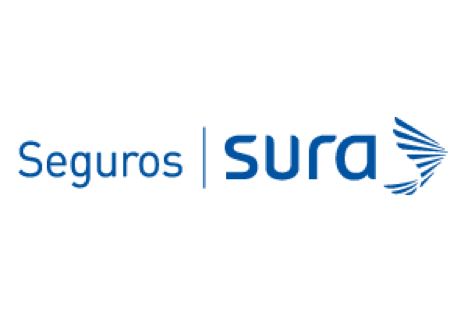

Seguro de desempleo
Podrás aumentar tu dinero
Este seguro está creado para instituciones financieras, cooperativas, cajas de compensación familiar y entidades que deseen incluir un nuevo producto en su portafolio de servicios, orientado a un grupo de personas cuya estabilidad laboral no dependa de estas instituciones.
El portafolio de SURA cuenta con productos flexibles, diseñados y adaptados a la medida de las expectativas de los usuarios.
Ofrece beneficios como el pago de un número definido de cuotas periódicas cuando se da la pérdida involuntaria del empleo ante los siguientes eventos: desempleo sin justa causa, renuncia voluntaria o negociada con pago de bonificación, finalización anticipada del contrato.
El portafolio de productos de SURA cubre un amplio espectro de la economía, lo que permite a los empresarios obtener beneficios adicionales.
Su forma de pago es flexible y puede variar de acuerdo con las condiciones definidas con el tomador de la póliza.